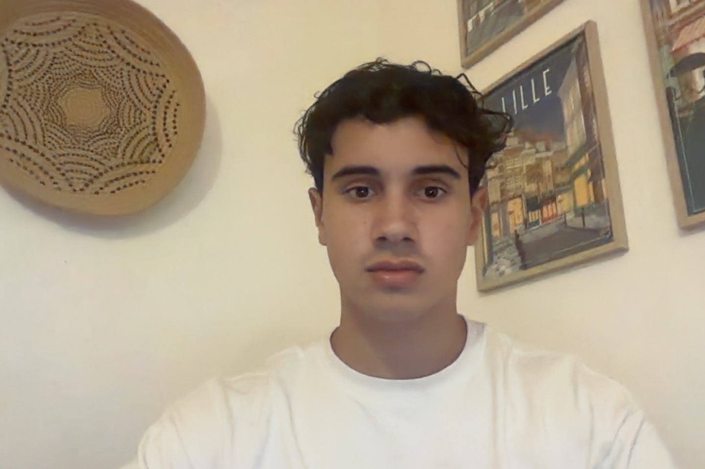

I'm a French student based in Lille. I love building things with code, automating repetitive tasks, and exploring new technologies. I recently started coding and I'm already hooked! 🚀
Check out my GitHubI am passionate about Programmation & Tech. There is something deeply satisfying about turning a blank screen into a working product. I enjoy writing Python scripts, building automation workflows, and learning new frameworks.
I am passionate about Handball. It is a sport that combines raw athleticism with sharp tactical thinking. I love the team spirit, the fast pace of the game, and the physical intensity of every match. Whether playing or watching, handball never fails to get my adrenaline going.
I am passionate about Perfume. Fragrance is an invisible accessory that says a lot about who you are. I enjoy exploring niche houses, understanding the composition of scents — top notes, heart notes, base notes — and finding the perfect fragrance for every occasion. It is an art form that most people overlook.
Follow me